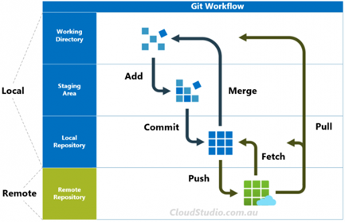
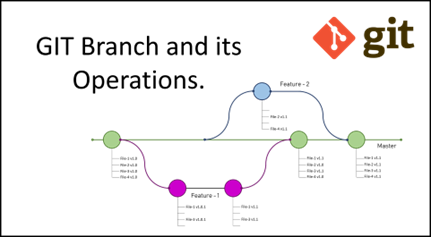
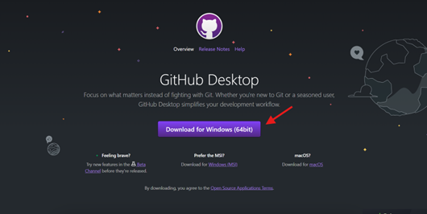

Conocimientos Previos Software
GIT y GitHub Desktop
GIT es un software de control de versiones. Los proyectos generalmente tienen múltiples desarrolladores trabajando en paralelo. Así que necesitan un sistema de control de versiones para asegurarse de que no hay conflictos de código entre ellos. El sistema de ramas en Git permite a los desarrolladores trabajar individualmente en una tarea (Por ejemplo: una rama -> una tarea O una Rama -> un desarrollador). Básicamente, se puede pensar en Git como una aplicación de software pequeña que controla tu código base, si eres un desarrollador. En un nivel más alto, GitHub es un servicio en la nube que ayuda a los desarrolladores a almacenar, administrar su código y crear repositorios basados en GIT, al igual que llevar un registro y control de cualquier cambio sobre este código.
Flujo de Git
Git fetch: Descarga archivos de un repositorio remoto a tu repositorio local. Este comando descarga el contenido remoto, pero no actualiza el estado de trabajo del repositorio local, por lo que el trabajo actual no se verá afectado.
Git pull: El comando git pull se emplea para extraer y descargar contenido desde un repositorio remoto y actualizar al instante el repositorio local para reflejar ese contenido.
Git push: Se usa para cargar contenido del repositorio local a un repositorio remoto.
Git merge: Se usa para fusionar una rama con otra rama activa.
Git add: Se usa para agregar archivos al área de preparación.
Git commit: Captura una instantánea de los archivos del área de preparación y las guarda en el repositorio local. Las instantáneas confirmadas pueden considerarse como versiones «seguras» de un proyecto.

Cuando se trabaja en Git se pueden usar una variedad de estrategias de ramificación y flujos de trabajo. Cuando se habla de una rama se refiere a una línea de desarrollo independiente, generalmente existe una rama principal llamada “master” o “main” del cual pueden salir ramificaciones para trabajar en el desarrollo de nuevo código aislando el trabajo con respecto a otras ramas y al trabajo de los demás miembros del equipo. Para el proyecto usaremos el método de ramificación llamado “GitHub Flow”, a diferencia de otros flujos, es simple y ligero. Como característica clave se tiene a la existencia de una rama principal que se encontrará siempre lista para “producción”, a partir de la rama principal se pueden crear nuevas ramas que tendrán la finalidad de trabajar y agregar nuevas funcionalidades, una vez el código de dichas ramas halla sido validado y aprobado, se fusionarán con la rama principal.

Instalación
Visitar el enlace GitHub Desktop | Simple collaboration from your desktop , dar Click en Download for Windows (64bit) y hacer doble click en el ejecutable descargado. Además, descargar mediante el siguiente enlace https://git-scm.com/downloads

En el siguiente enlace pueden ver un pequeño tutorial de como usar la aplicación de GitHub Desktop: https://www.youtube.com/watch?v=PvUexC0-D2s
Docker
Docker es un software utilizado para desplegar aplicaciones dentro de contenedores virtuales. La principal diferencia con respecto a las máquinas virtuales es que los contenedores Docker comparten el sistema operativo del anfitrión, mientras que las máquinas virtuales también tienen un sistema operativo invitado que se ejecuta sobre el sistema anfitrión.
Instalación
En el siguiente enlace se muestra un tutorial para la instalación de Docker y WSL: Docker, Instlación en Windows (más WSL, Window Subsystem for Linux) https://www.youtube.com/watch?v=ZO4KWQfUBBc
Comandos básicos para ejecutar en el terminal
Para poder practicar los siguientes comandos comandos usar <image_name> = ubuntu
Docker pull <image_name>: Descargar una imagen desde el hub de Docker
Docker images: Muestra la lista de imágenes descargadas
Docker rmi <image_name>: Borra una imagen descargada
Docker run –name <container_name> <image_name>: Crear y correr un contenedor a partir de una imagen
Docker start|stop <container_name>: Inicia o detiene un contenedor
Docker rm <container_name>: Borra un contenedor
Docker ps: Muestra los contenedores corriendo en el sistema
Docker ps -a: Muestra todos los contenedores
Docker exec -it <container_name> /bin/bash: Abre un terminal bash de un contenedor corriendo.
En el siguiente documento pueden ver más comandos útiles para usar en Docker https://docs.docker.com/get-started/docker_cheatsheet.pdf
Comandos básicos de Linux
En el siguiente enlace se encuentran enlistados algunos comandos básicos de Linux: Los 60 comandos básicos de Linux que todo usuario debe saber https://www.hostinger.com/es/tutoriales/linux-comandos